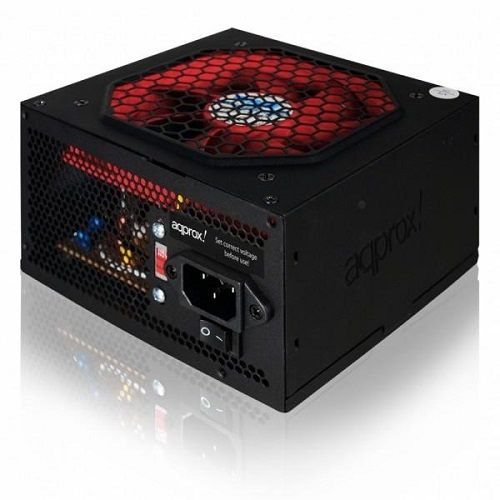

RAM
A RAM a számítógépünk elsődleges memóriája, ez tárolja az összes olyan adatot és programot amit a processzornak végre kell hajtania, azonban csak addig képes eltárolni őket, amíg feszültség alatt van a számítógép, áramtalanításakor az összes adat elveszik belőle.
Router
Útvonalválasztó eszköz, amely az IP cím alapján forgalomirányítást végez. Hálózati eszköz, egy adott hálózatba kötött számítógépek között képes megosztani az Internet forgalmat.

Tápegység
A tápegység feladata, hogy a hálózati felszültséget a rá csatlakozó hardverek számára megkívánt feszültséggé alakítsa.